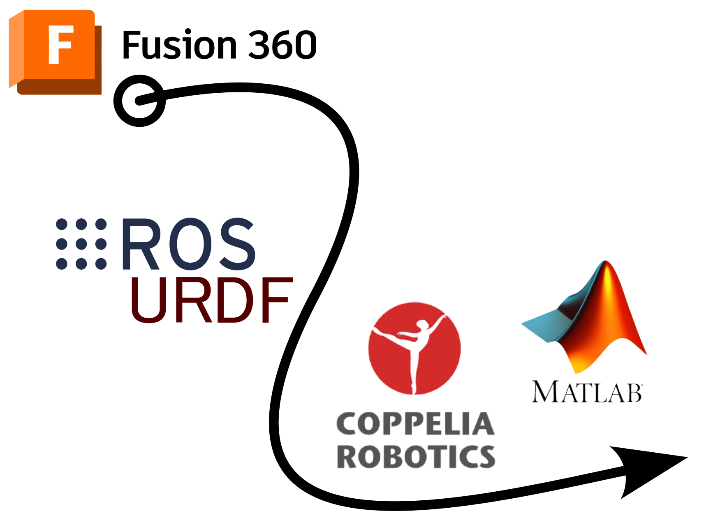
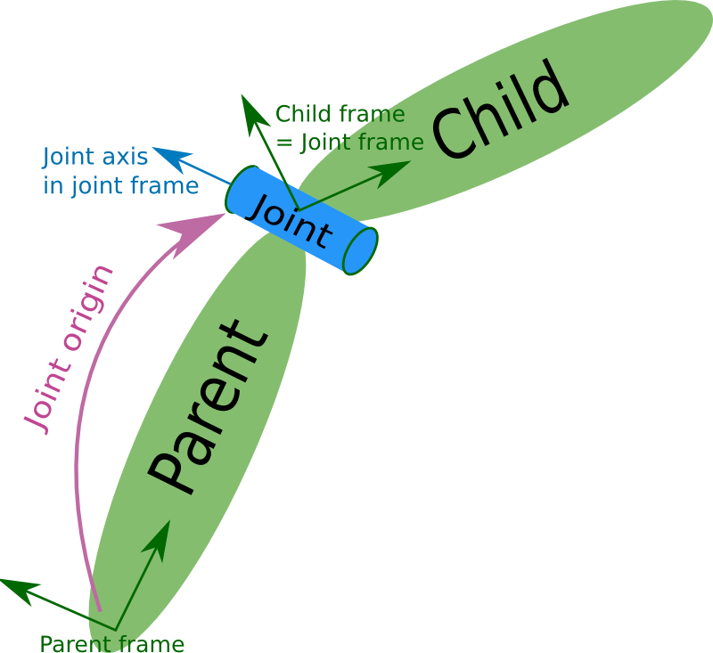
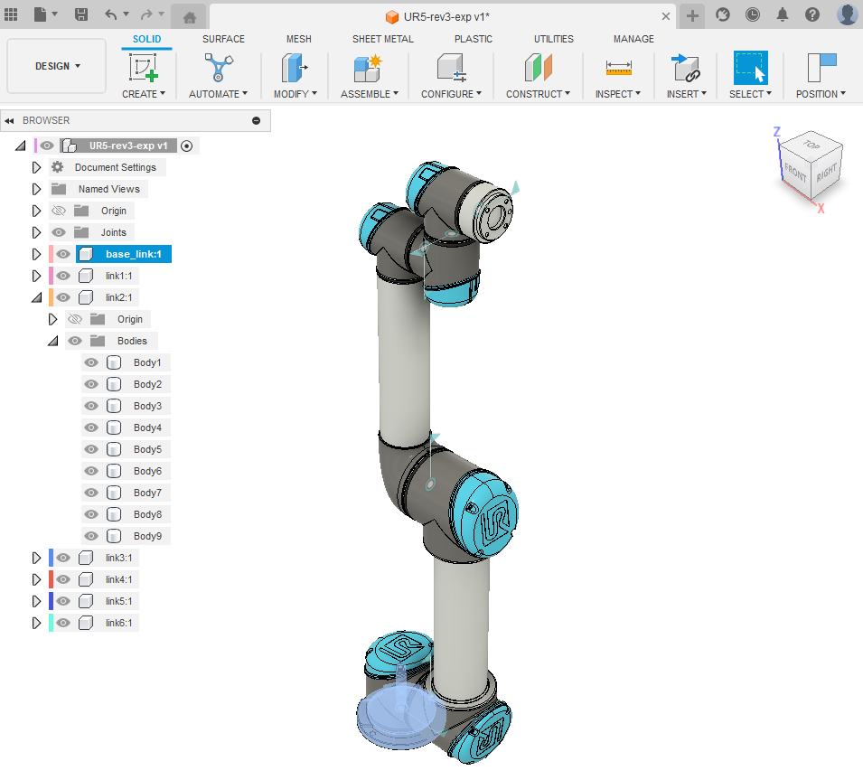
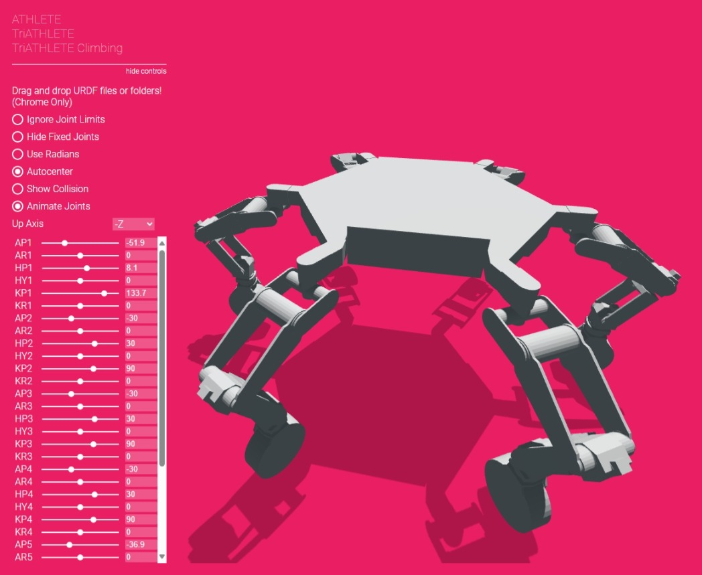
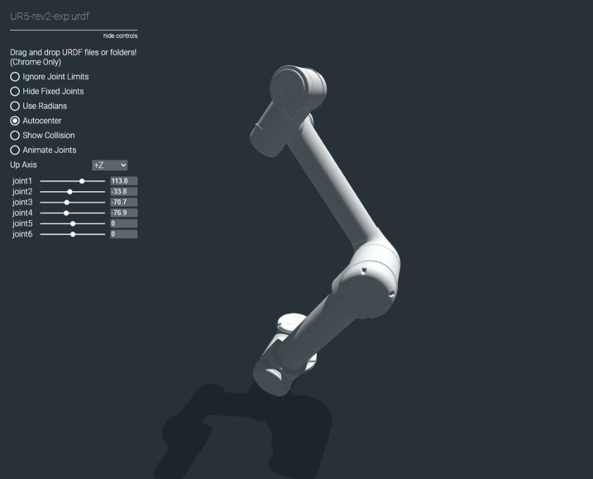
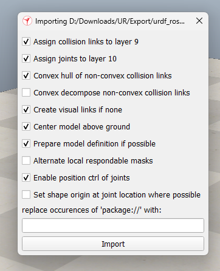
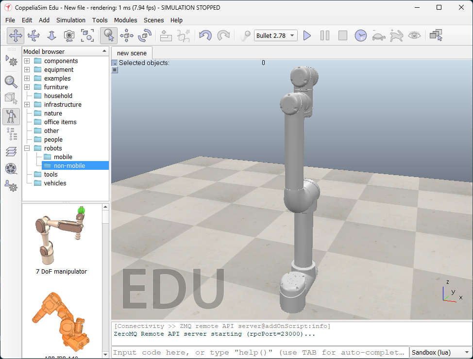
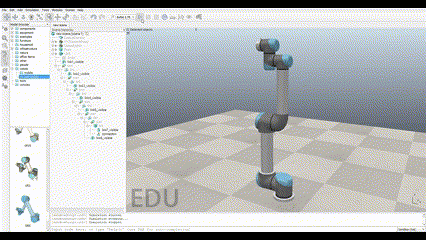

Manejo de exportación de archivos URDF utilizando Fusion 360
URDF
CAD
ROS
CoppeliaSim
Autor/a
Sergio Jácobo
Fecha de publicación
23 de enero de 2025

Ruta de trabajo para utilizar archivos URDF
¿Qué es URDF?
El formato unificado de descripción de robótica (URDF) es un tipo de archivo XML que incluye la descripción física de un robot. Es básicamente un modelo 3D con información sobre articulaciones, motores, masa, etc. Estos archivos se ejecutan a través del Sistema Operativo de Robots (ROS). Los datos del archivo informan al operador humano sobre el aspecto y las capacidades del robot antes de que comiencen a operarlo.
Estos archivos también se utilizan en simuladores para probar el comportamiento del robot antes de su despliegue en el mundo real, o en la creación de un gemelo digital para la visualización en tiempo real y bidireccional del estado de un dispositivo robótico.
Nota
Muchos fabricantes de robots tienen modelos URDF de sus dispositivos disponibles para descargar. Pero si no es el caso, se tendrá que crear desde cero. La solución más práctica es generarlo a partir de un dibujo CAD 3D, dado que permite crear formas y relaciones mecánicas complejas, manteniendo una relación eslabón-articulación completamente referenciada y necesaria en el archivo URDF.
Configuración básica
La relación entre elementos se aprecia de forma intuitiva en la Figura 1. Un ejemplo de código básico y su representación gráfica se aprecian en la Figura 2.
Detalle de un eslabón

Relación eslabón-articulación
Relación entre eslabones
Figura 1: Representación de links, joints y sus orígenes utilizados en URDF
Ya sea que dibujes desde cero o que reutilices archivos, deberás adaptar el modelado de tu dibujo teniendo en cuenta los requisitos solicitados en el paso de conversión o generación de nuestro archivo URDF (que dependerá del código del autor del script). Además, según el diseño CAD (por ejemplo, como “top-down” y “bottom-up”) esto será más o menos difícil en algunos casos dependiendo del proceso de modelado según el programa utilizado. En este caso, con ayuda de Fusion 360 con un diseño top-down, es necesario que los elementos de nuestro robot (eslabones y articulaciones o “links” y “joints” como se referirá a partir de ahora respectivamente) se conserve la siguiente distribución:
Figura 4: Relación entre los elementos entre los archivos CAD y URDF
La Figura 4 ejemplifica que es necesario que en Fusion 360, las partes principales del robot se definan como componentes, creados a partir de subpartes (cuerpos). Manteniendo esta relación en todo momento, se garantiza y facilita la definición de links y joints de forma correcta.
En esta oportunidad, se utilizó como ejemplo el robot colaborativo UR5 de Universal Robots a lo largo de todo el post. Así, en la Figura 5 se aprecia la jerarquía de los componentes y cuerpos creados durante el dibujo. Por ejemplo, el segundo eslabón se compone de 9 subpartes (de tipo “body” en Fusion 360), evitando la anidación de componentes en todo momento.

Figura 5: Ruta de trabajo para utilizar archivos URDF
Exportando un archivo URDF
Luego de realizar nuestro dibujo CAD, se recomienda utilizar un plugin para generar de forma automática y bajo la mesa, todo el código necesario para la descripción gráfica de nuestro robot. Esto nos permite centrarnos principalmente en lo importante durante el modelado. Sin embargo, dado que cada plugin disponible depende del software utilizado, como Solidworks, FreeCAD o Fusion360.
Para generar correctamente el archivo URDF, se requiere: - Los eslabones del robot deben definirse como componentes. - El componente base debe renombrarse como base_link.
- Cada componente debe contener únicamente cuerpos simples. No utilizar componentes anidados.
- Cuando se definen las relaciones de articulación (joint): 1. Se selecciona primero el eslabón hijo (child link) como Componente 1. 2. Luego, el eslabón padre (parent link) como Componente 2. 3. Verificar que el movimiento del grado de libertad (por ejemplo, de rotación o traslación) siga el eje de rotación +Z.
Modificando nuestro archivo
Dentro del conjunto de la carpeta exportada, centrarse en las carpetas \urdf y \meshes que contienen el archivo URDF y los archivos de modelo 3D.
Cambiar la extensión del archivo URDF de .xacro por .urdf.
Verificar que el nombre de los archivos mesh (formato STL) referenciados dentro del archivo URDF coincidan con sus archivos en la carpeta \meshes. Si no, corregir.
Corregir todos los enlaces de referencia en los entornos <geometry> del archivo URDF:
Para verificar si nuestro archivo URDF se creó correctamente antes de importarlo a algún simulador, podemos utilizar un visualizador como RViz en Ubuntu. Sin embargo, para los usuarios de Windows, la aplicación urdf-loaders de gkjohnson nos permite visualizar y manipular de forma intuitiva el resultado de nuestro robot en línea. Incluso, viene un ejemplo de un robot hexápodo ATHLETE. Para nuestro
 
Importando a tu simulador
Finalmente, dependiendo del simulador a utilizar, se requerirán ciertos parámetros o configuraciones para importar correctamente el robot en formato URDF. En cualquier caso, se debe verificar siempre la relación entre links y joints y cómo reaccionan al movimiento de los joints.
Para CoppeliaSim
Dirigirse a la opción de importación según Modules -> Importers -> URDF importer.
Seleccionar la opción Convex hull of non-convex collision links para mejorar el rendimiento de simulación según la Figura 6.

Figura 6: Opciones de URDF importer
Finalmente, el resultado se aprecia en la siguiente figura. Nótese la jerarquía de los elementos del robot, de forma secuencial, correspondiente a un robot de cadena abierta como el robot cooperativo UR5 en la Figura 7.

Figura 7: Vista de CoppeliaSim
Por otro lado, CoppeliaSim ofrece una gran cantidad de robots comerciales incluidos en el programa para arrastrar al espacio de trabajo y comenzar a trabajar. Esto reduce el tiempo de creación del modelo cuando se pretende utilizar algún robot comercial disponible, como Sawyer, Kuka LBR4, Franka Emika Panda, etc. La Figura 8 muestra la simulación cinemática por defecto luego de importar el robot desde el panel navegador de robots.

Figura 8: Simulación del robot UR5 integrado en CoppeliaSim
¡Y ahí lo tienes! Siguiendo estos sencillos pasos, puedes crear y exportar tus propios archivos URDF desde Fusion 360, y usarlos para simular tus robots en CoppeliaSim o cualquier otro simulador compatible con URDF. ¡Feliz simulación!
---title: "Desde Fusion 360 a URDF: Construye y Simula tu Robot"author: Sergio Jácobodescription: | Manejo de exportación de archivos URDF utilizando Fusion 360date: last-modifiedcategories: - "URDF" - "CAD" - "ROS" - "CoppeliaSim"reading-time: truenumber-sections: falselang: estoc: trueimage: images/thumbnail.pngimage-alt: A robot generated by IA.language: section-title-footnotes: Notas---{fig-align="center" width=60%} # ¿Qué es URDF?El formato unificado de descripción de robótica (URDF) es un tipo de archivo XML que incluye la descripción física de un robot. Es básicamente un modelo 3D con información sobre articulaciones, motores, masa, etc. Estos archivos se ejecutan a través del Sistema Operativo de Robots (ROS). Los datos del archivo informan al operador humano sobre el aspecto y las capacidades del robot antes de que comiencen a operarlo.Estos archivos también se utilizan en simuladores para probar el comportamiento del robot antes de su despliegue en el mundo real, o en la creación de un gemelo digital para la visualización en tiempo real y bidireccional del estado de un dispositivo robótico.:::{.callout-note}Muchos fabricantes de robots tienen modelos URDF de sus dispositivos disponibles para descargar. Pero si no es el caso, se tendrá que crear desde cero. La solución más práctica es generarlo a partir de un dibujo CAD 3D, dado que permite crear formas y relaciones mecánicas complejas, manteniendo una relación eslabón-articulación completamente referenciada y necesaria en el archivo URDF. :::## Configuración básicaLa relación entre elementos se aprecia de forma intuitiva en la @fig-rosURDF. Un ejemplo de código básico y su representación gráfica se aprecian en la @fig-ejemplo-urdf.::: {#fig-rosURDF layout-nrow=2}{width=70%}{width=60%}{fig-align="center" width=60%}Representación de links, joints y sus orígenes utilizados en URDF :::::: {#fig-ejemplo-urdf layout-ncol=2}```xml 1 <robot name="test_robot"> 2 <link name="link1" /> 3 <link name="link2" /> 4 <link name="link3" /> 5 <link name="link4" /> 6 7 <joint name="joint1" type="continuous"> 8 <parent link="link1"/> 9 <child link="link2"/>10 <origin xyz="5 3 0" rpy="0 0 0" />11 <axis xyz="-0.9 0.15 0" />12 </joint>13 14 <joint name="joint2" type="continuous">15 <parent link="link1"/>16 <child link="link3"/>17 <origin xyz="-2 5 0" rpy="0 0 1.57" />18 <axis xyz="-0.707 0.707 0" />19 </joint>20 21 <joint name="joint3" type="continuous">22 <parent link="link3"/>23 <child link="link4"/>24 <origin xyz="5 0 0" rpy="0 0 -1.57" />25 <axis xyz="0.707 -0.707 0" />26 </joint>27 </robot>```{width=65%}Formato URDF y su representación gráfica de los elementos del robot::::::{.callout-note}Para una descripción más detallada sobre el formato URDF y su configuración, se recomienda visitar la [documentación URDF en ROS](https://wiki.ros.org/urdf/Tutorials/Create%20your%20own%20urdf%20file) o algunas [notas](https://abedgnu.github.io/Notes-ROS/chapters/ROS/10_robot_modeling/urdf.html).:::## Aplicaciones::: {#fig-aplicaciones layout-ncol=2}](images/urdf_franka.png)](images/urdf_rviz.png){width=80%}Ejemplos de robots importados como URDF:::# Creando tu robot ## Consideraciones CADYa sea que dibujes desde cero o que reutilices archivos, deberás adaptar el modelado de tu dibujo teniendo en cuenta los requisitos solicitados en el paso de conversión o generación de nuestro archivo URDF (que dependerá del código del autor del script). Además, según el diseño CAD (por ejemplo, como *"top-down"* y *"bottom-up"*) esto será más o menos difícil en algunos casos dependiendo del proceso de modelado según el programa utilizado. En este caso, con ayuda de Fusion 360 con un diseño top-down, es necesario que los elementos de nuestro robot (eslabones y articulaciones o *"links"* y *"joints"* como se referirá a partir de ahora respectivamente) se conserve la siguiente distribución:```{dot}//| label: fig-cad-urdf//| fig-cap: "Relación entre los elementos entre los archivos CAD y URDF"digraph G { fontname="Helvetica,Arial,sans-serif" node [fontname="Helvetica,sans-serif"] edge [fontname="Cambria,sans-serif"] subgraph cluster_0 { style=filled; color="#03AED2"; node [style=filled,color="#FEEFAD"]; label = "CAD"; "Raiz" -> "Componente 1" "Raiz" -> "Componente 2" "Componente 1" -> "Cuerpo 1" "Componente 1" -> "Cuerpo 2" "Componente 1" -> "Cuerpo 3" "Componente 2" -> "Cuerpo 4" "Componente 2" -> "Cuerpo 5" "Componente 2" -> "Cuerpo 6" } subgraph cluster_1 { style=filled; node [style=filled, color="#F3B95F"]; "Body 4, 5, 6"; "Body 1, 2 y 3" label = "URDF"; color="#FEFFD2"; node [shape=box,style=filled,color="#FF7D29"]; "Link 1"; node [shape=diamond,style=filled,color="#FFBF78"]; "Link 2"; "Link 2" -> "Body 4, 5, 6" "Link 1" -> "Link 2" [label="Joint 1"] "Link 1" -> "Body 1, 2 y 3" }}```La @fig-cad-urdf ejemplifica que es necesario que en Fusion 360, las partes principales del robot se definan como **componentes**, creados a partir de subpartes (**cuerpos**). Manteniendo esta relación en todo momento, se garantiza y facilita la definición de links y joints de forma correcta.En esta oportunidad, se utilizó como ejemplo el robot colaborativo **UR5** de [Universal Robots](https://www.universal-robots.com/products/ur5-robot/) a lo largo de todo el post. Así, en la @fig-robotCad se aprecia la jerarquía de los componentes y cuerpos creados durante el dibujo. Por ejemplo, el segundo eslabón se compone de 9 subpartes (de tipo *"body"* en Fusion 360), evitando la anidación de componentes en todo momento. {fig-align="left" #fig-robotCad} # Exportando un archivo URDFLuego de realizar nuestro dibujo CAD, se recomienda utilizar un plugin para generar de forma automática y bajo la mesa, todo el código necesario para la descripción gráfica de nuestro robot. Esto nos permite centrarnos principalmente en lo importante durante el modelado. Sin embargo, dado que cada plugin disponible depende del software utilizado, como Solidworks, FreeCAD o Fusion360. Para ello, se utilizó el plugin [dheena2k2/fusion2urdf-ros2](https://github.com/dheena2k2/fusion2urdf-ros2) para generar archivos URDF orientado a ROS2, el mismo que se basó en otro plugin de [syuntoku14/fusion2urdf](https://github.com/dheena2k2/fusion2urdf-ros2) orientado a ROS1.## Consideraciones CADPara generar correctamente el archivo URDF, se requiere:- Los eslabones del robot deben definirse como componentes.- El componente base debe renombrarse como `base_link`. - Cada componente debe contener únicamente cuerpos simples. No utilizar componentes anidados. - Cuando se definen las relaciones de articulación (joint): 1. Se selecciona primero el eslabón hijo (child link) como Componente 1. 2. Luego, el eslabón padre (parent link) como Componente 2. 3. Verificar que el movimiento del grado de libertad (por ejemplo, de rotación o traslación) siga el eje de rotación +Z.## Modificando nuestro archivo 1. Dentro del conjunto de la carpeta exportada, centrarse en las carpetas `\urdf` y `\meshes` que contienen el archivo URDF y los archivos de modelo 3D. 2. Cambiar la extensión del archivo URDF de `.xacro` por `.urdf`. 3. Verificar que el nombre de los archivos *mesh* (formato STL) referenciados dentro del archivo URDF coincidan con sus archivos en la carpeta `\meshes`. Si no, corregir. 4. Corregir todos los enlaces de referencia en los entornos `<geometry>` del archivo URDF: 1. Del siguiente código: ```xml <geometry> <mesh filename="file://$(find UR5_description)/meshes/base_link.stl" scale="0.001 0.001 0.001"/> </geometry>``` 2. Reemplazar así:```xml <geometry> <mesh filename="package://meshes/base_link.stl" scale="0.001 0.001 0.001"/> </geometry>```:::{.callout-tip}Para verificar si nuestro archivo URDF se creó correctamente antes de importarlo a algún simulador, podemos utilizar un visualizador como RViz en Ubuntu. Sin embargo, para los usuarios de Windows, la aplicación [urdf-loaders](https://gkjohnson.github.io/urdf-loaders/javascript/example/bundle/index.html) de [gkjohnson](https://github.com/gkjohnson/urdf-loaders/) nos permite visualizar y manipular de forma intuitiva el resultado de nuestro robot en línea. Incluso, viene un ejemplo de un robot hexápodo ATHLETE. Para nuestro ::: {layout-nrow=2}{fig-align="center" width=45%} {fig-align="center" width=45%}::::::# Importando a tu simulador Finalmente, dependiendo del simulador a utilizar, se requerirán ciertos parámetros o configuraciones para importar correctamente el robot en formato URDF. En cualquier caso, se debe verificar siempre la relación entre links y joints y cómo reaccionan al movimiento de los joints.## Para CoppeliaSim1. Dirigirse a la opción de importación según `Modules -> Importers -> URDF importer`.2. Seleccionar la opción `Convex hull of non-convex collision links` para mejorar el rendimiento de simulación según la @fig-urdfImporter. {#fig-urdfImporter} 3. Finalmente, el resultado se aprecia en la siguiente figura. Nótese la jerarquía de los elementos del robot, de forma secuencial, correspondiente a un robot de cadena abierta como el robot cooperativo UR5 en la @fig-coppeliaSimWithRobot. {#fig-coppeliaSimWithRobot}Por otro lado, CoppeliaSim ofrece una gran cantidad de robots comerciales incluidos en el programa para arrastrar al espacio de trabajo y comenzar a trabajar. Esto reduce el tiempo de creación del modelo cuando se pretende utilizar algún robot comercial disponible, como Sawyer, Kuka LBR4, Franka Emika Panda, etc. La @fig-ur5-coppelia-incluido muestra la simulación cinemática por defecto luego de importar el robot desde el panel navegador de robots.{width=100% #fig-ur5-coppelia-incluido}¡Y ahí lo tienes! Siguiendo estos sencillos pasos, puedes crear y exportar tus propios archivos URDF desde Fusion 360, y usarlos para simular tus robots en CoppeliaSim o cualquier otro simulador compatible con URDF. ¡Feliz simulación!::: {.further-info}::: grid::: {.g-col-12 .g-col-md-12}::: {.bio-footer}<img src="../../../../../images/sergio-bio.jpg" alt="Headshot of Sergio" class="img-footer"><div class="p-footer"> Soy Sergio, un apasionado ingeniero en mecatrónica dedicado al diseño de robots clínicos y dispositivos biomédicos. Puedes seguirme en [Twitter](https://twitter.com/JacoboZavaleta), ver algunos repositorios de mi trabajo en [Github](https://www.github.com/SJacoboZavaleta), o leer más sobre mí en este [sitio web](../../../../../about.qmd).</div>::::::::::::